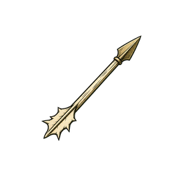

Nell Vey
Bellkeeper
Saving is unavailable. Progress is kept only for this session.
Lighting the ward lanterns

Briarhold is played in landscape.
Click battlefield to capture aim/fire · WASD move · Shift sprint · Space jump/mantle · C slide · E use · F knife · 1–3 weapons
Permanent progression
Spend banked Oathmarks between battles.
Daytime
Walk to an authored socket and use Context to install a defence.
Speak with Nell at the bell
Defence socket
Hub service
Choose a service before the horn sounds.
Bellkeeper
Holdfolk
Active and ready goals are shown here. Speak with the named holdfolk to accept or report them.
The Green remembers
It lasts only for this run.
The siege waits
Capture the moment
F8 anywhere while playing
A new watch begins
Leave Briarhold?
Permanent action
This deletes the current run, Oathmarks, ranks, unlocks, roster, relationships and story history. Device settings and controller mappings stay.
This cannot be undone.
Input calibration
Release both sticks and all buttons
Follow each prompt once. Hold Back / B for one second to cancel.The eastern sky pales
The host withdraws beneath the trees. For now.